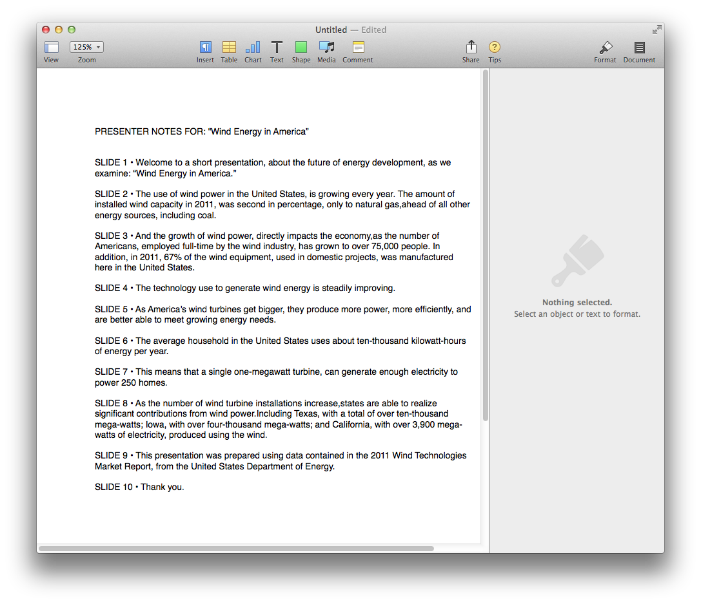
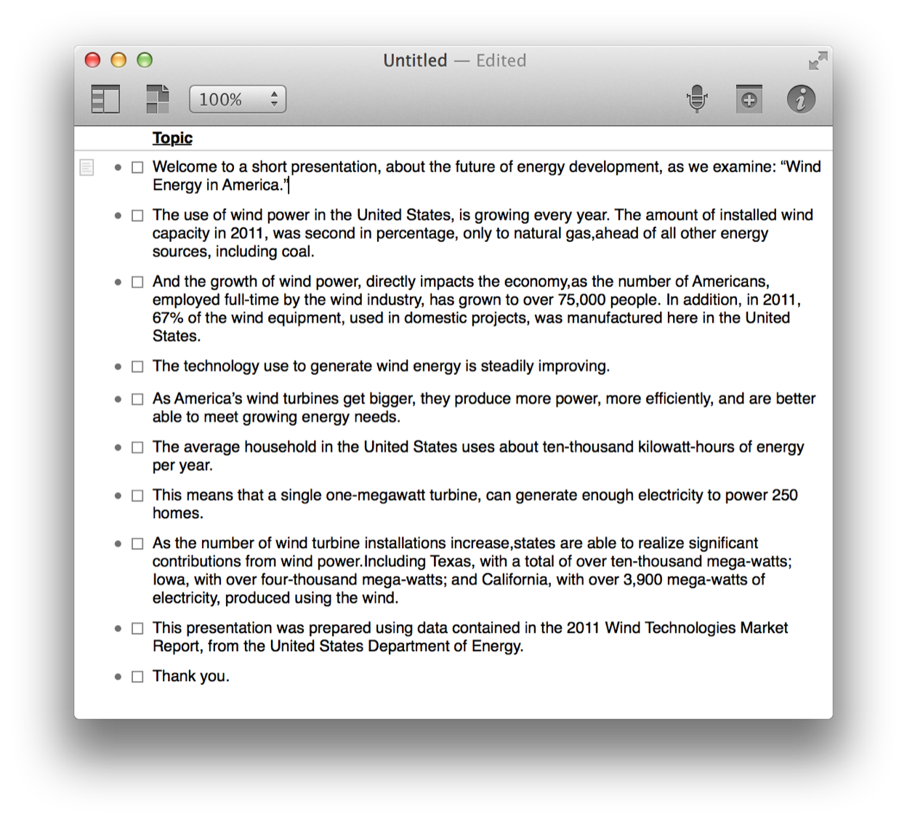

Although Presenter Notes can be used for a variety of purposes, they most often contain the statements intended to be spoken by the presenter. The following scripts demonstrate interesting uses of these written outlines.
As many who develop presentations for a living will tell you, for a fresh perpective, it is often useful to work on presenter notes away from the presentation itself. The scripts in this segment demonstrate how to retrieve the presenter notes from a presentation and place them into a new document in another application like Pages or OmniOutliner.
Retrieve Presenter Notes from Active Slides to Pages
(⬇ see below ) A new Pages document containing the presenter notes from the frontmost Keynote presentation:

Here’s a similar script except the presenter notes are moved into a new OmniOutliner document:
NOTE: OmniOutliner is productivity software from the Omni Group, and is available for purchase from the Mac App Store, or as a trial version from the Omni Group website.
New Outliner Document with Presenter Notes of Active Slides
(⬇ see below ) A new OmniOutliner document containing the presenter notes from the frontmost Keynote presentation:

Since OmniOutliner is an application dedicated to editing outline documents, a script can easily move the edited notes back into the originating Keynote presentation:
Transfer OmniOutliner Outline to Presenter Notes
01
tellapplication "OmniOutliner"
02
activate
03
try
04
if not (existsdocument 1) then errornumber 10000
05
06
display dialog "This script will replace the presenter notes of the active slides of the frontmost Keynote presentation, with the contents of this outline." & return & return & "The contents of each row will become the presenter notes of a corresponding Keynote slide." with icon 1
07
08
tellapplication "Keynote"
09
activate
10
if not (existsdocument 1) then errornumber 10001
11
12
tell the frontdocument
13
set theslideCountto thecountof (slideswhoseskippedisfalse)
14
end tell
15
end tell
16
17
tell the frontdocument
18
settheseOutlinerNotesto thetopicof everyrow
19
end tell
20
21
if the (countoftheseOutlinerNotes) is greater than theslideCountthen
22
errornumber 10002
23
else if the (countoftheseOutlinerNotes) is less than theslideCountthen
24
errornumber 10003
25
end if
26
on errorerrorMessage number errorNumber
27
iferrorNumberis 10000 then
28
seterrorMessageto "No document is open."
29
else iferrorNumberis 10001 then
30
seterrorMessageto "No presentation is open."
31
else iferrorNumberis 10002 then
32
seterrorMessageto ¬
33
"There are more rows in this document than there are active slides in the presentation."
34
else iferrorNumberis 10003 then
35
seterrorMessageto ¬
36
"There are fewer rows in this document than there are active slides in the presentation."
settheseSlidesto (everyslideof it whoseskippedisfalse)
50
repeat withifrom 1 to thecountoftheseSlides
51
setthisSlidetoitemioftheseSlides
52
set thepresenter notesofthisSlidetoitemioftheseOutlinerNotes
53
end repeat
54
end tell
55
display dialog "The transfer of presenter notes has completed." buttons {"OK"} default button 1
56
end tell
Speaking Presenter Notes
Here’s an interesting script that can provide an opportunity for you to sit back and watch and listen to your presentation being presented to you!
This script uses the built-in text-to-speech capabilities of OS X, and the scriptable presentation controls in Keynote, to display each slide and read the slide’s presenter notes aloud. When a slide’s presenter notes have been read, the script will advance to the next slide.
NOTE: This script is designed to work with presentations of a specific design. “Speakable” slides must not contain object builds and must contain presenter notes.
One more example of “spoken presentation notes.” This script will render the presenter notes of a slide to an audio file of the notes being spoken by the text-to-speech frameworks in OS X. The audio file is then imported into the source slide.
Once the script has completed, you can play the presentation and advance the slides to listen to the presentation.
TIP: Using the Export to HTML script, a presentation containing audio clips can be exported to HTML content, and placed on a server to become an online presentation! See for yourself!
Mention of third-party websites and products is for informational purposes only and constitutes neither an endorsement nor a recommendation. MACOSXAUTOMATION.COM assumes no responsibility with regard to the selection, performance or use of information or products found at third-party websites. MACOSXAUTOMATION.COM provides this only as a convenience to our users. MACOSXAUTOMATION.COM has not tested the information found on these sites and makes no representations regarding its accuracy or reliability. There are risks inherent in the use of any information or products found on the Internet, and MACOSXAUTOMATION.COM assumes no responsibility in this regard. Please understand that a third-party site is independent from MACOSXAUTOMATION.COM and that MACOSXAUTOMATION.COM has no control over the content on that website. Please contact the vendor for additional information.